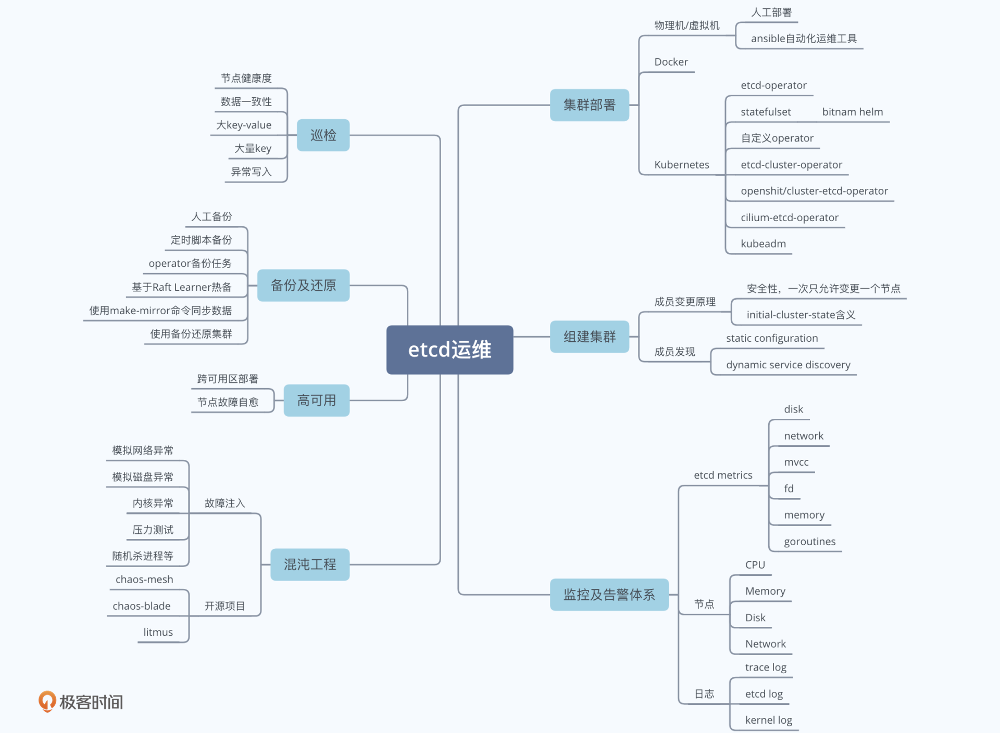
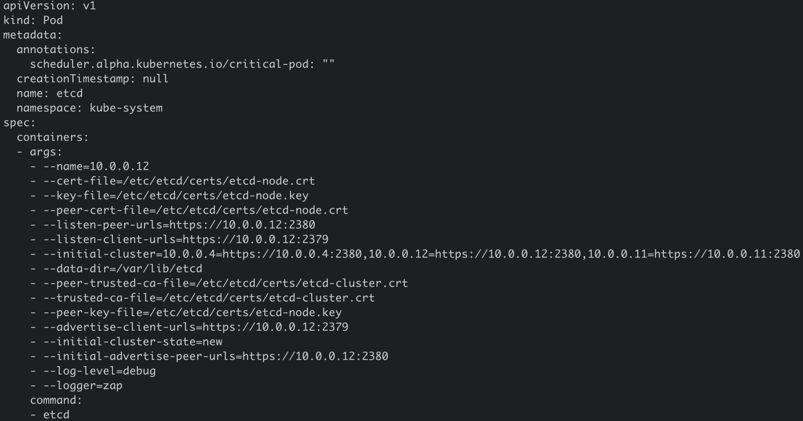
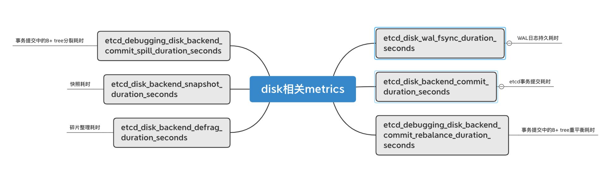
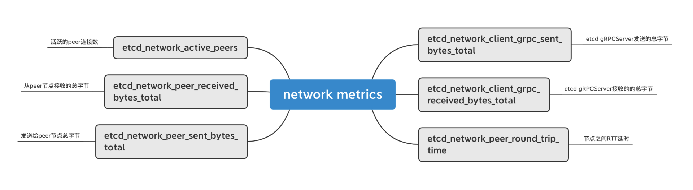
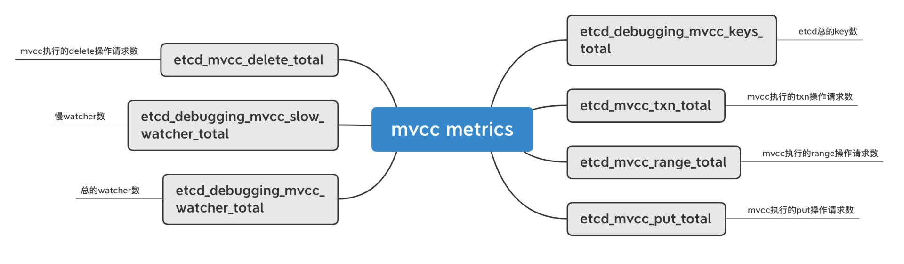
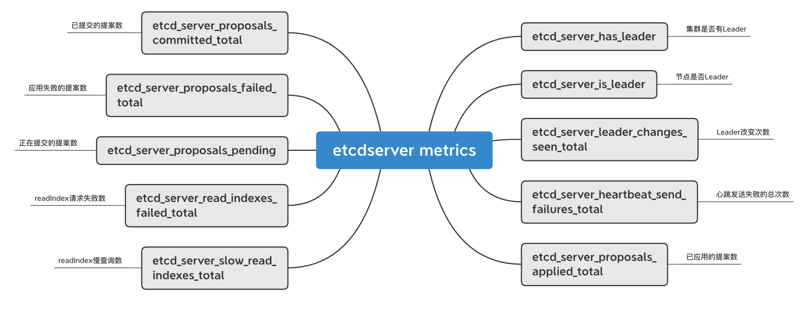
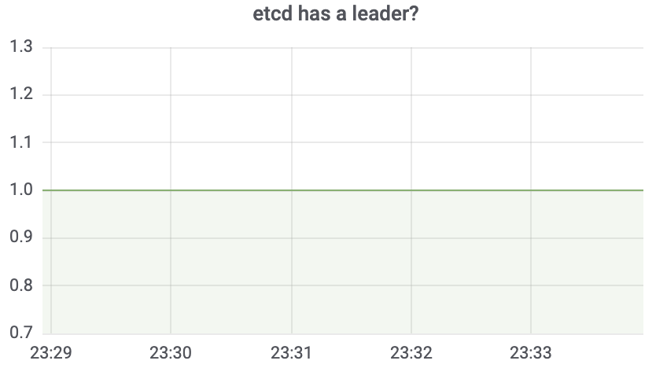
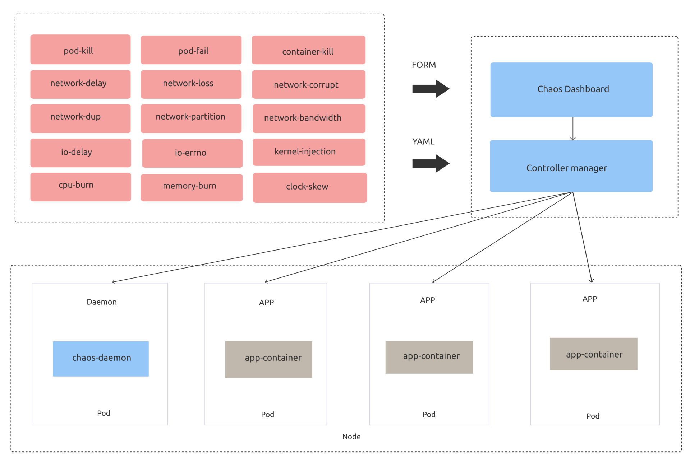

- 00 开篇词 为什么你要学习etcd_.md.html
- 01 etcd的前世今生：为什么Kubernetes使用etcd？.md.html
- 02 基础架构：etcd一个读请求是如何执行的？.md.html
- 03 基础架构：etcd一个写请求是如何执行的？.md.html
- 04 Raft协议：etcd如何实现高可用、数据强一致的？.md.html
- 05 鉴权：如何保护你的数据安全？.md.html
- 06 租约：如何检测你的客户端存活？.md.html
- 07 MVCC：如何实现多版本并发控制？.md.html
- 08 Watch：如何高效获取数据变化通知？.md.html
- 09 事务：如何安全地实现多key操作？.md.html
- 10 boltdb：如何持久化存储你的key-value数据？.md.html
- 11 压缩：如何回收旧版本数据？.md.html
- 12 一致性：为什么基于Raft实现的etcd还会出现数据不一致？.md.html
- 13 db大小：为什么etcd社区建议db大小不超过8G？.md.html
- 14 延时：为什么你的etcd请求会出现超时？.md.html
- 15 内存：为什么你的etcd内存占用那么高？.md.html
- 16 性能及稳定性（上）：如何优化及扩展etcd性能？.md.html
- 17 性能及稳定性（下）：如何优化及扩展etcd性能_.md.html
- 18 实战：如何基于Raft从0到1构建一个支持多存储引擎分布式KV服务？.md.html
- 19 Kubernetes基础应用：创建一个Pod背后etcd发生了什么？.md.html
- 20 Kubernetes高级应用：如何优化业务场景使etcd能支撑上万节点集群？.md.html
- 21 分布式锁：为什么基于etcd实现分布式锁比Redis锁更安全？.md.html
- 22 配置及服务发现：解析etcd在API Gateway开源项目中应用.md.html
- 23 选型：etcd_ZooKeeper_Consul等我们该如何选择？.md.html
- 24 运维：如何构建高可靠的etcd集群运维体系？.md.html
- 特别放送 成员变更：为什么集群看起来正常，移除节点却会失败呢？.md.html
- 结束语 搞懂etcd，掌握通往分布式存储系统之门的钥匙.md.html
- 捐赠
24 运维：如何构建高可靠的etcd集群运维体系？
你好，我是唐聪。
在使用etcd过程中，我们经常会面临着一系列问题与选择，比如：
- etcd是使用虚拟机还是容器部署，各有什么优缺点？
- 如何及时发现etcd集群隐患项（比如数据不一致）？
- 如何及时监控及告警etcd的潜在隐患（比如db大小即将达到配额）？
- 如何优雅的定时、甚至跨城备份etcd数据？
- 如何模拟磁盘IO等异常来复现Bug、故障？
今天，我就和你聊聊如何解决以上问题。我将通过从etcd集群部署、集群组建、监控体系、巡检、备份及还原、高可用、混沌工程等维度，带你了解如何构建一个高可靠的etcd集群运维体系。
希望通过这节课，让你对etcd集群运维过程中可能会遇到的一系列问题和解决方案有一定的了解，帮助你构建高可靠的etcd集群运维体系，助力业务更快、更稳地运行。
整体解决方案
那要如何构建高可靠的etcd集群运维体系呢?
我通过下面这个思维脑图给你总结了etcd运维体系建设核心要点，它由etcd集群部署、成员管理、监控及告警体系、备份及还原、巡检、高可用及自愈、混沌工程等维度组成。

集群部署
要想使用etcd集群，我们面对的第一个问题是如何选择合适的方案去部署etcd集群。
首先是计算资源的选择，它本质上就是计算资源的交付演进史，分别如下：
- 物理机；
- 虚拟机；
- 裸容器（如Docker实例）；
- Kubernetes容器编排。
物理机资源交付慢、成本高、扩缩容流程费时，一般情况下大部分业务团队不再考虑物理机，除非是超大规模的上万个节点的Kubernetes集群，对CPU、内存、网络资源有着极高诉求。
虚拟机是目前各个云厂商售卖的主流实例，无论是基于KVM还是Xen实现，都具有良好的稳定性、隔离性，支持故障热迁移，可弹性伸缩，被etcd、数据库等存储业务大量使用。
在基于物理机和虚拟机的部署方案中，我推荐你使用ansible、puppet等自动运维工具，构建标准、自动化的etcd集群搭建、扩缩容流程。基于ansible部署etcd集群可以拆分成以下若干个任务:
- 下载及安装etcd二进制到指定目录；
- 将etcd加入systemd等服务管理；
- 为etcd增加配置文件，合理设置相关参数；
- 为etcd集群各个节点生成相关证书，构建一个安全的集群；
- 组建集群版（静态配置、动态配置，发现集群其他节点）；
- 开启etcd服务，启动etcd集群。
详细你可以参考digitalocean这篇博客文章，它介绍了如何使用ansible去部署一个安全的etcd集群，并给出了对应的yaml任务文件。
容器化部署则具有极速的交付效率、更灵活的资源控制、更低的虚拟化开销等一系列优点。自从Docker诞生后，容器化部署就风靡全球。有的业务直接使用裸Docker容器来跑etcd集群。然而裸Docker容器不具备调度、故障自愈、弹性扩容等特性，存在较大局限性。
随后为了解决以上问题，诞生了以Kubernetes、Swarm为首的容器编排平台，Kubernetes成为了容器编排之战中的王者，大量业务使用Kubernetes来部署etcd、ZooKeeper等有状态服务。在开源社区中，也诞生了若干个etcd的Kubernetes容器化解决方案，分别如下：
- etcd-operator；
- bitnami etcd/statefulset；
- etcd-cluster-operator；
- openshit/cluster-etcd-operator；
- kubeadm。
etcd-operator目前已处于Archived状态，无人维护，基本废弃。同时它是基于裸Pod实现的，要做好各种备份。在部分异常情况下存在集群宕机、数据丢失风险，我仅建议你使用它的数据备份etcd-backup-operator。
bitnami etcd提供了一个helm包一键部署etcd集群，支持各个云厂商，支持使用PV、PVC持久化存储数据，底层基于StatefulSet实现，较稳定。目前不少开源项目使用的是它。
你可以通过如下helm命令，快速在Kubernete集群中部署一个etcd集群。
helm repo add bitnami https://charts.bitnami.com/bitnami
helm install my-release bitnami/etcd
etcd-cluster-operator和openshit/cluster-etcd-operator比较小众，目前star不多，但是有相应的开发者维护，你可参考下它们的实现思路，与etcd-operator基于Pod、bitnami etcd基于Statefulset实现不一样的是，它们是基于ReplicaSet和Static Pod实现的。
最后要和你介绍的是kubeadm，它是Kubernetes集群中的etcd高可用部署方案的提供者，kubeadm是基于Static Pod部署etcd集群的。Static Pod相比普通Pod有其特殊性，它是直接由节点上的kubelet进程来管理，无需通过kube-apiserver。
创建Static Pod方式有两种，分别是配置文件和HTTP。kubeadm使用的是配置文件，也就是在kubelet监听的静态Pod目录下（一般是/etc/kubernetes/manifests）放置相应的etcd Pod YAML文件即可，如下图所示。

注意在这种部署方式中，部署etcd的节点需要部署docker、kubelet、kubeadm组件，依赖较重。
集群组建
和你聊完etcd集群部署的几种模式和基本原理后，我们接下来看看在实际部署过程中最棘手的部分，那就是集群组建。因为集群组建涉及到etcd成员管理的原理和节点发现机制。
在特别放送里，超凡已通过一个诡异的故障案例给你介绍了成员管理的原理，并深入分析了etcd集群添加节点、新建集群、从备份恢复等场景的核心工作流程。etcd目前通过一次只允许添加一个节点的方式，可安全的实现在线成员变更。
你要特别注意，当变更集群成员节点时，节点的initial-cluster-state参数的取值可以是new或existing。
- new，一般用于初始化启动一个新集群的场景。当设置成new时，它会根据initial-cluster-token、initial-cluster等参数信息计算集群ID、成员ID信息。
- existing，表示etcd节点加入一个已存在的集群，它会根据peerURLs信息从Peer节点获取已存在的集群ID信息，更新自己本地配置、并将本身节点信息发布到集群中。
那么当你要组建一个三节点的etcd集群的时候，有哪些方法呢?
在etcd中，无论是Leader选举还是日志同步，都涉及到与其他节点通信。因此组建集群的第一步得知道集群总成员数、各个成员节点的IP地址等信息。
这个过程就是发现（Discovery）。目前etcd主要通过两种方式来获取以上信息，分别是static configuration和dynamic service discovery。
static configuration是指集群总成员节点数、成员节点的IP地址都是已知、固定的，根据我们上面介绍的initial-cluster-state原理，有如下两个方法可基于静态配置组建一个集群。
- 方法1，三个节点的initial-cluster-state都配置为new，静态启动，initial-cluster参数包含三个节点信息即可，详情你可参考社区文档。
- 方法2，第一个节点initial-cluster-state设置为new，独立成集群，随后第二和第三个节点都为existing，通过扩容的方式，不断加入到第一个节点所组成的集群中。
如果成员节点信息是未知的，你可以通过dynamic service discovery机制解决。
etcd社区还提供了通过公共服务来发现成员节点信息，组建集群的方案。它的核心是集群内的各个成员节点向公共服务注册成员地址等信息，各个节点通过公共服务来发现彼此，你可以参考官方详细文档。
监控及告警体系
当我们把集群部署起来后，在业务开始使用之前，部署监控是必不可少的一个环节，它是我们保障业务稳定性，提前发现风险、隐患点的重要核心手段。那么要如何快速监控你的etcd集群呢？
正如我在14和15里和你介绍延时、内存时所提及的，etcd提供了丰富的metrics来展示整个集群的核心指标、健康度。metrics按模块可划分为磁盘、网络、MVCC事务、gRPC RPC、etcdserver。
磁盘相关的metrics及含义如下图所示。

网络相关的metrics及含义如下图所示。

mvcc相关的较多，我在下图中列举了部分其含义，如下所示。

etcdserver相关的如下，集群是否有leader、堆积的proposal数等都在此模块。

更多metrics，你可以通过如下方法查看。
curl 127.0.0.1:2379/metrics
了解常见的metrics后，我们只需要配置Prometheus服务，采集etcd集群的2379端口的metrics路径。
采集的方案一般有两种，静态配置和动态配置。
静态配置是指添加待监控的etcd target到Prometheus配置文件，如下所示。
global:
scrape_interval: 10s
scrape_configs:
- job_name: test-etcd
static_configs:
- targets:
['10.240.0.32:2379','10.240.0.33:2379','10.240.0.34:2379']
静态配置的缺点是每次新增集群、成员变更都需要人工修改配置，而动态配置就可解决这个痛点。
动态配置是通过Prometheus-Operator的提供ServiceMonitor机制实现的，当你想采集一个etcd实例时，若etcd服务部署在同一个Kubernetes集群，你只需要通过Kubernetes的API创建一个如下的ServiceMonitor资源即可。若etcd集群与Promehteus-Operator不在同一个集群，你需要去创建、更新对应的集群Endpoint。
那Prometheus是如何知道该采集哪些服务的metrics信息呢?
答案ServiceMonitor资源通过Namespace、Labels描述了待采集实例对应的Service Endpoint。
apiVersion: monitoring.coreos.com/v1
kind: ServiceMonitor
metadata:
name: prometheus-prometheus-oper-kube-etcd
namespace: monitoring
spec:
endpoints:
- bearerTokenFile: /var/run/secrets/kubernetes.io/serviceaccount/token
port: http-metrics
scheme: https
tlsConfig:
caFile: /etc/prometheus/secrets/etcd-certs/ca.crt
certFile: /etc/prometheus/secrets/etcd-certs/client.crt
insecureSkipVerify: true
keyFile: /etc/prometheus/secrets/etcd-certs/client.key
jobLabel: jobLabel
namespaceSelector:
matchNames:
- kube-system
selector:
matchLabels:
app: prometheus-operator-kube-etcd
release: prometheus
采集了metrics监控数据后，下一步就是要基于metrics监控数据告警了。你可以通过Prometheus和Alertmanager组件实现，那你应该为哪些核心指标告警呢？
当然是影响集群可用性的最核心的metric。比如是否有Leader、Leader切换次数、WAL和事务操作延时。etcd社区提供了一个丰富的告警规则，你可以参考下。
最后，为了方便你查看etcd集群运行状况和提升定位问题的效率，你可以基于采集的metrics配置个grafana可视化面板。下面我给你列出了集群是否有Leader、总的key数、总的watcher数、出流量、WAL持久化延时的可视化面板。
-

 -
-
 -
-

备份及还原
监控及告警就绪后，就可以提供给业务在生产环境使用了吗？
当然不行，数据是业务的安全红线，所以你还需要做好最核心的数据备份工作。
如何做呢？
主要有以下方法，首先是通过etcdctl snapshot命令行人工备份。在发起重要变更的时候，你可以通过如下命令进行备份，并查看快照状态。
ETCDCTL_API=3 etcdctl --endpoints $ENDPOINT
snapshot save snapshotdb
ETCDCTL_API=3 etcdctl --write-out=table snapshot status snapshotdb
其次是通过定时任务进行定时备份，建议至少每隔1个小时备份一次。
然后是通过etcd-backup-operator进行自动化的备份，类似ServiceMonitor，你可以通过创建一个备份任务CRD实现。CRD如下：
apiVersion: "etcd.database.coreos.com/v1beta2"
kind: "EtcdBackup"
metadata:
name: example-etcd-cluster-periodic-backup
spec:
etcdEndpoints: [<etcd-cluster-endpoints>]
storageType: S3
backupPolicy:
# 0 > enable periodic backup
backupIntervalInSecond: 125
maxBackups: 4
s3:
# The format of "path" must be: "<s3-bucket-name>/<path-to-backup-file>"
# e.g: "mybucket/etcd.backup"
path: <full-s3-path>
awsSecret: <aws-secret>
最后你可以通过给etcd集群增加Learner节点，实现跨地域热备。因Learner节点属于非投票成员的节点，因此它并不会影响你集群的性能。它的基本工作原理是当Leader收到写请求时，它会通过Raft模块将日志同步给Learner节点。你需要注意的是，在etcd 3.4中目前只支持1个Learner节点，并且只允许串行读。
巡检
完成集群部署、了解成员管理、构建好监控及告警体系并添加好定时备份策略后，这时终于可以放心给业务使用了。然而在后续业务使用过程中，你可能会遇到各类问题，而这些问题很可能是metrics监控无法发现的，比如如下：
- etcd集群因重启进程、节点等出现数据不一致；
- 业务写入大 key-value 导致 etcd 性能骤降；
- 业务异常写入大量key数，稳定性存在隐患；
- 业务少数 key 出现写入 QPS 异常，导致 etcd 集群出现限速等错误；
- 重启、升级 etcd 后，需要人工从多维度检查集群健康度；
- 变更 etcd 集群过程中，操作失误可能会导致 etcd 集群出现分裂；
……
因此为了实现高效治理etcd集群，我们可将这些潜在隐患总结成一个个自动化检查项，比如：
- 如何高效监控 etcd 数据不一致性？
- 如何及时发现大 key-value?
- 如何及时通过监控发现 key 数异常增长？
- 如何及时监控异常写入 QPS?
- 如何从多维度的对集群进行自动化的健康检测，更安心变更？
- ……
如何将这些 etcd 的最佳实践策略反哺到现网大规模 etcd 集群的治理中去呢？
答案就是巡检。
参考ServiceMonitor和EtcdBackup机制，你同样可以通过CRD的方式描述此巡检任务，然后通过相应的Operator实现此巡检任务。比如下面就是一个数据一致性巡检的YAML文件，其对应的Operator组件会定时、并发检查其关联的etcd集群各个节点的key差异数。
apiVersion: etcd.cloud.tencent.com/v1beta1
kind: EtcdMonitor
metadata:
creationTimestamp: "2020-06-15T12:19:30Z"
generation: 1
labels:
clusterName: gz-qcloud-etcd-03
region: gz
source: etcd-life-cycle-operator
name: gz-qcloud-etcd-03-etcd-node-key-diff
namespace: gz
spec:
clusterId: gz-qcloud-etcd-03
metricName: etcd-node-key-diff
metricProviderName: cruiser
name: gz-qcloud-etcd-03
productName: tke
region: gz
status:
records:
- endTime: "2021-02-25T11:22:26Z"
message: collectEtcdNodeKeyDiff,etcd cluster gz-qcloud-etcd-03,total key num is
122143,nodeKeyDiff is 0
startTime: "2021-02-25T12:39:28Z"
updatedAt: "2021-02-25T12:39:28Z"
高可用及自愈
通过以上机制，我们已经基本建设好一个高可用的etcd集群运维体系了。最后再给你提供几个集群高可用及自愈的小建议：
- 若etcd集群性能已满足业务诉求，可容忍一定的延时上升，建议你将etcd集群做高可用部署，比如对3个节点来说，把每个节点部署在独立的可用区，可容忍任意一个可用区故障。
- 逐步尝试使用Kubernetes容器化部署etcd集群。当节点出现故障时，能通过Kubernetes的自愈机制，实现故障自愈。
- 设置合理的db quota值，配置合理的压缩策略，避免集群db quota满从而导致集群不可用的情况发生。
混沌工程
在使用etcd的过程中，你可能会遇到磁盘、网络、进程异常重启等异常导致的故障。如何快速复现相关故障进行问题定位呢？
答案就是混沌工程。一般常见的异常我们可以分为如下几类：
- 磁盘IO相关的。比如模拟磁盘IO延时上升、IO操作报错。之前遇到的一个底层磁盘硬件异常导致IO延时飙升，最终触发了etcd死锁的Bug，我们就是通过模拟磁盘IO延时上升后来验证的。
- 网络相关的。比如模拟网络分区、网络丢包、网络延时、包重复等。
- 进程相关的。比如模拟进程异常被杀、重启等。之前遇到的一个非常难定位和复现的数据不一致Bug，我们就是通过注入进程异常重启等故障，最后成功复现。
- 压力测试相关的。比如模拟CPU高负载、内存使用率等。
开源社区在混沌工程领域诞生了若干个优秀的混沌工程项目，如chaos-mesh、chaos-blade、litmus。这里我重点和你介绍下chaos-mesh，它是基于Kubernetes实现的云原生混沌工程平台，下图是其架构图（引用自社区）。

为了实现以上异常场景的故障注入，chaos-mesh定义了若干种资源类型，分别如下：
- IOChaos，用于模拟文件系统相关的IO延时和读写错误等。
- NetworkChaos，用于模拟网络延时、丢包等。
- PodChaos，用于模拟业务Pod异常，比如Pod被杀、Pod内的容器重启等。
- StressChaos，用于模拟CPU和内存压力测试。
当你希望给etcd Pod注入一个磁盘IO延时的故障时，你只需要创建此YAML文件就好。
apiVersion: chaos-mesh.org/v1alpha1
kind: IoChaos
metadata:
name: io-delay-example
spec:
action: latency
mode: one
selector:
labelSelectors:
app: etcd
volumePath: /var/run/etcd
path: '/var/run/etcd/**/*'
delay: '100ms'
percent: 50
duration: '400s'
scheduler:
cron: '@every 10m'
小结
最后我们来小结下今天的内容。
今天我通过从集群部署、集群组建、监控及告警体系、备份、巡检、高可用、混沌工程几个维度，和你深入介绍了如何构建一个高可靠的etcd集群运维体系。
在集群部署上，当你的业务集群规模非常大、对稳定性有着极高的要求时，推荐使用大规格、高性能的物理机、虚拟机独占部署，并且使用ansible等自动化运维工具，进行标准化的操作etcd，避免人工一个个修改操作。
对容器化部署来说，Kubernetes场景推荐你使用kubeadm，其他场景可考虑分批、逐步使用bitnami提供的etcd helm包，它是基于statefulset、PV、PVC实现的，各大云厂商都广泛支持，建议在生产环境前，多验证各个极端情况下的行为是否符合你的预期。
在集群组建上，各个节点需要一定机制去发现集群中的其他成员节点，主要可分为static configuration和dynamic service discovery。
static configuration是指集群中各个成员节点信息是已知的，dynamic service discovery是指你可以通过服务发现组件去注册自身节点信息、发现集群中其他成员节点信息。另外我和你介绍了重要参数initial-cluster-state的含义，它也是影响集群组建的一个核心因素。
在监控及告警体系上，我和你介绍了etcd网络、磁盘、etcdserver、gRPC核心的metrics。通过修改Prometheues配置文件，添加etcd target，你就可以方便的采集etcd的监控数据。我还给你介绍了ServiceMonitor机制，你可通过它实现动态新增、删除、修改待监控的etcd实例，灵活的、高效的采集etcd Metrcis。
备份及还原上，重点和你介绍了etcd snapshot命令，etcd-backup-operator的备份任务CRD机制，推荐使用后者。
最后是巡检、混沌工程，它能帮助我们高效治理etcd集群，及时发现潜在隐患，低成本、快速的复现Bug和故障等。
思考题
好了，这节课到这里也就结束了，最后我给你留了一个思考题。
你在生产环境中目前是使用哪种方式部署etcd集群的呢？若基于Kubernetes容器化部署的，是否遇到过容器化后的相关问题？
感谢你的阅读，也欢迎你把这篇文章分享给更多的朋友一起阅读。
© 2019 - 2023 Liangliang Lee. Powered by gin and hexo-theme-book.